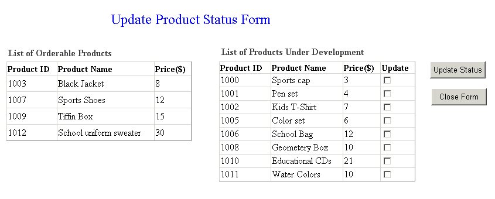

Updating DataSet Populated Using REF CURSOR Through
ODP.NET Sample
Table of Contents
The purpose of this sample application is to demonstrate
how the data retrieved in a Data Set populated using REF CURSORs is updated
through ODP.NET .
REF CURSORs are not directly updatable, however data
populated into the Data Set is updateable. By using custom SQL statements,
OracleDataAdapter can flush any REF CURSOR
updates to database.
When this sample is run, a web form with two Data Grids
is displayed. One Data Grid is populated with records from Products database
table with "orderable" status. The other Data Grid is populated
with records from Products database table with "under development"
status. These two Data Grids are populated using Products Dataset that
contains data retrieved from REF CURSORs returned as OUT parameters from
a database stored procedure.
The user has option to update Product Status from "under
development" to "orderable" by selecting the checkboxes
provided with datagrid for Under Development products and clicking "Update
Status" button. On this event, product status for the selected DataRows
from datagrid for Under Development products is set to "orderable".
The command type is set to stored procedure to execute "ODPNet.UpdateStatus"
database stored procedure. Product ID and Product Status parameters are
bound to an OracleCommand object. The OracleCommand
is executed through an OracleDataAdapter,
hence, updating the Data Set populated using REF Cursors through ODP.NET.
When this ASP.NET sample application is run, a web
form is displayed to the user in a web browser as shown in figure 1.1.

Figure 1.1: Displaying
Initial Screen
The user can select one or more check boxes available
in the Data Grid displaying "under development" status product
records. On clicking the "Update Status" button, the product
status for the selected records is updated and the modified records are
reflected in the Data Grid displaying "orderable" status records.
The "Update Status" button is disabled when no records with
"Under Development" status exists. To close this web form the
user can click "Close Form" button.
-
Microsoft Internet Information Services (IIS) 5.0
or later, installed on Microsoft Windows 2000 environment with Service
Pack 2 or later.
-
Visual Basic.NET installed with MS Development
Environment 7.0 version (MS Visual Studio .NET) including MS
.NET Framework 1.0 version
-
Oracle9i Database or later running SQL*Net
TCP/IP listener (can be downloaded here)
-
Oracle Data Provider for .NET (ODP.NET) (can be
downloaded here)
.
-
Any Web browser like Internet Explorer 5.5 or
later
Unzip UpdRefCursor.zip
using Winzip or command utility to your convenient directory
referred to as <Extract_Dir>.
Extraction of the zip file results in the creation of UpdRefCursor
directory. Refer Description
of Sample Files section for more details.
Connect to your database as any user and run
the script DatabaseSetup.sql
located
in
<Extract_Dir>\UpdRefCursor\set
directory at SQL prompt.
@<Extract_Dir>\UpdRefCursor\setup\DatabaseSetup.sql
where <Extract_Dir>
is the directory where you have extracted the sample. This
script creates a database user Oranet/Oranet
with Products table and ODPNet database package.
This script will prompt for "SystemPassword" and "TNSName",
input the values as per your database setup.
1. Ensure that the Database setup
has been completed.
2. To publish your project from IIS, a virtual directory
needs to be created. A virtual directory is a shared resource that is
identified by an alias that represents a physical location on a server.
Follow the steps given below to create a virtual directory for the sample:
- Go to Start Menu -> Settings
-> ControlPanel -> Administrative Tools -> Internet Services
Manger -> Internet Information Services ->
<Host Name>
->Default Web Site. Right click on Default Web Site and select New
-> Virtual Directory.
- A Virtual Directory Creation
Wizard starts.
- Give the alias as
UpdRefCursor
for Web Virtual Directory . Click Next.
- Enter the location as
<Extract_Dir>\UpdRefCursor,
to associate the given alias to this physical location. Click Next.
<Extract_Dir> is the folder where
you have unzipped this sample application.
- Ensure the Read, Run Scripts
access permission are set for this virtual directory. Click Next. Click
Finish.
- This completes the creation of
Virtual Directory.
3. Open Visual Studio.NET. To create a new web project,
click on File -> New -> Project -> Visual Basic Projects ->
ASP.NET Web Application, give the project
location mapping to your virtual directory ,
For eg. http://<Server-Name>/UpdRefCursor/src,
where
<Server-Name> is
the Host Name or IP address as per your IIS configuration
UpdRefCursor is the virtual directory
from where you want to publish your project. (created in the preceding
step)
/src is the
directory where your project will be created.
Click OK.
4. To add the sample application files to your project,
go to File -> Add Existing Item. In the File dialog select the sample
files from <Extract_Dir>\UpdRefCursor\src.
Select ConnectionParams.vb, Error.*, ProductForm.*
files and add them to your project. To view the added files, go to Solution
Explorer and click "Show All Files" button from the icon bar.
5. In Solution Explorer, double click on
ConnectionParams.vb file to edit it. Change the database
connection parameters i.e. UserName, Password, TNSName as given while
doing Database Setup.
6. Select ProductForm.aspx
from Solution Explorer. Right click on ProductForm.aspx
and select "Set As Start Page" from the popup menu.
6. Ensure that the following .NET Component References
have been added to the project you have created:
- System
- System.Data
- Oracle.DataAccess
- System.Web
- System.XML
- System.Drawing
To add the above .NET Components
- Go to Menu -> View -> Solution
Explorer.
- Right click on the project you
have created, choose "Add Reference".
- Choose the above .NET Components
from the list displayed.
- Click "Select", then
OK.
- The chosen .NET component gets
added to the project.
7. Go to Menu -> Build -> Build project UpdRefCursor
to build the sample.. And run the sample by clicking Debug->Start
Without Debugging in Visual Studio.NET environment. Or manually
run with the following URL in a web browser.
http://<Server-Name>/UpdRefCursor/src/ProductForm.aspx
For eg.
http://152.69.170.237/UpdRefCursor/src/ProductForm.aspx
Following is the directory structure of the UpdRefCursor.zip
:
| Directory |
Files |
Description
|
UpdRefCursor\doc\ |
Readme.html |
This file |
| otn.css |
Cascading Stylesheet applied
to Readme.html |
UpdRefCursor\doc\images\ |
screen1.gif |
Screenshot used in Readme.html
file |
UpdRefCursor\setup\ |
DatabaseSetup.sql |
Contains script to create
database objects required for this sample |
UpdRefCursor\src\ |
ProductForm.aspx |
Web form that displays
Data Grids |
| Error.aspx |
Web Form to handle errors |
| ConnectionParams.vb |
Contains database connection
parameters |
| ProductForm.aspx.vb |
Contains code for displaying
and updating Dataset |
| Error.aspx.vb |
Source file corresponding
to error.aspx |
| *.resx |
.NET XML resource templates |
|